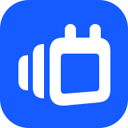

<!doctype html><html lang="sv"><meta charset="utf-8"><meta name="viewport" content="width=device-width,initial-scale=1"><title>CalPal · SVG-utkast 13</title>
<style>*{box-sizing:border-box}body{margin:0;background:#ececf0;color:#090838;font-family:Arial,sans-serif}main{max-width:1200px;margin:auto;padding:44px}header{display:flex;justify-content:space-between;align-items:center;margin-bottom:26px}h1{font-size:22px;margin:0}header span{color:#646477;font-size:13px}.hero{background:white;border-radius:24px;padding:60px;display:flex;align-items:center;justify-content:space-between;gap:55px}.hero .logo{width:66%}.hero .icon{width:160px}.grid{display:grid;grid-template-columns:1fr 1fr;gap:20px;margin-top:20px}.card{background:#fff;border-radius:20px;padding:30px;min-height:174px}.card.dark{background:#18181d;color:white}.label{font-size:11px;text-transform:uppercase;letter-spacing:1.5px;color:#646477;margin-bottom:24px}.dark .label{color:#b1b1c3}.sizes{display:flex;gap:25px;align-items:center;height:55px}.sizes span{text-align:center;font-size:10px;color:#646477;display:grid;gap:10px}.dark img{filter:brightness(0) invert(1)}.lockup{width:250px;height:65px;object-fit:contain;object-position:left center}.files{margin-top:22px;display:flex;gap:22px;flex-wrap:wrap;font-size:13px}a{color:#155bff}footer{font-size:12px;color:#646477;margin-top:24px}@media(max-width:700px){main{padding:24px}.hero{padding:30px;flex-direction:column}.hero .logo{width:100%}.grid{grid-template-columns:1fr}}
</style><main><header><h1>CalPal · Compact stack</h1><span>13 / SVG-utkast</span></header><section class="hero"></section><section class="grid"><div class="card"><div class="label">Symbol i små storlekar</div><div class="sizes"><span>16 px</span><span>24 px</span><span>32 px</span><span>48 px</span><span>64 px</span></div></div><div class="card"><div class="label">En färg</div></div><div class="card dark"><div class="label">På mörk bakgrund</div></div><div class="card"><div class="label">Exempel i apphuvud · 36 px</div></div></section><div class="files"><a href="calpal-symbol.svg">Symbol.svg</a><a href="calpal-symbol-mono.svg">Symbol-mono.svg</a><a href="calpal-app-icon.svg">Appikon.svg</a><a href="calpal-logo.svg">Logotyp.svg</a><a href="calpal-logo-mono.svg">Logotyp-mono.svg</a></div><footer>Rena vektorformer. CalPal-texten är konturer i Nunito; inga externa typsnitt, rasterbilder eller skript.</footer></main></html>